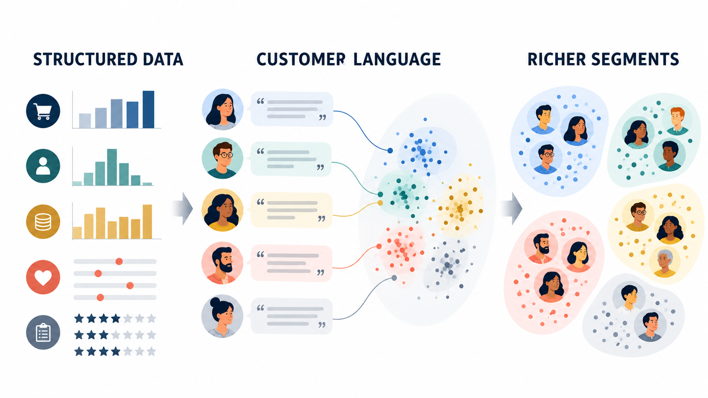

Review: Segmentation Analytics Sequence

The methods answer different questions: What dimensions organize customer needs? Which customers look similar? How can the firm assign new customers to the discovered groups?
Factor analysis, clustering, classification, and embedding-based segmentation · Week 3
Marketing Principle #1: All customers differ
Yixing Chen and Wenchang Li
Customers differ in needs, constraints, identity, prior experience, and response to marketing activity.
Segmentation manages customer heterogeneity. It does not eliminate it.
Group customers with similar needs and verify that needs differ across groups.
Compare market attractiveness with competitive strength and resource requirements.
Choose the benefit and evidence that create a credible relative advantage.
The methods answer different questions: What dimensions organize customer needs? Which customers look similar? How can the firm assign new customers to the discovered groups?
Can we represent 12 survey items with a small number of interpretable latent dimensions?
Data: 320 fictional loyalty members, 12 seven-point items, customer behavior, and open-ended comments.
Speed, easy ordering, accurate availability, and simple fulfillment.
Durability, trustworthy products, knowledgeable service, and problem resolution.
Low prices, savings, promotions, and budget efficiency.
New products, digital features, early access, and personalized discovery.
Which grouping best balances statistical separation, simplicity, and managerial usefulness?
We will compare hierarchical evidence with a four-cluster k-means solution.
A cluster becomes a market segment only after it supports a different and valuable action.
Can observable customer characteristics classify new customers with acceptable accuracy?
Misclassification costs matter. A wrong assignment can produce an irrelevant benefit or an uneconomic offer.
AI Frontier 1
Embeddings convert open-ended customer language into numeric representations that preserve semantic similarity.
The opportunity is to recover needs that predefined survey questions did not anticipate.

Workshop data are synthetic. Embedding implementation follows the Sentence Transformers quickstart and scikit-learn clustering workflow.